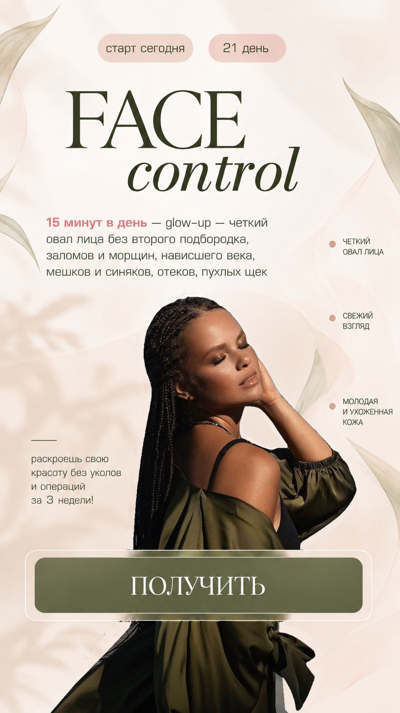
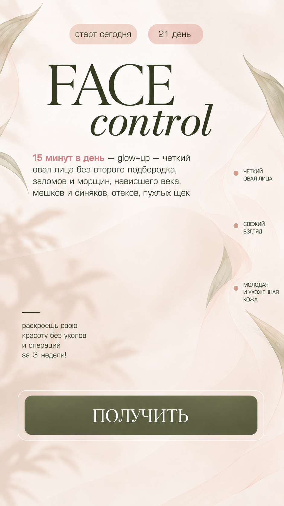
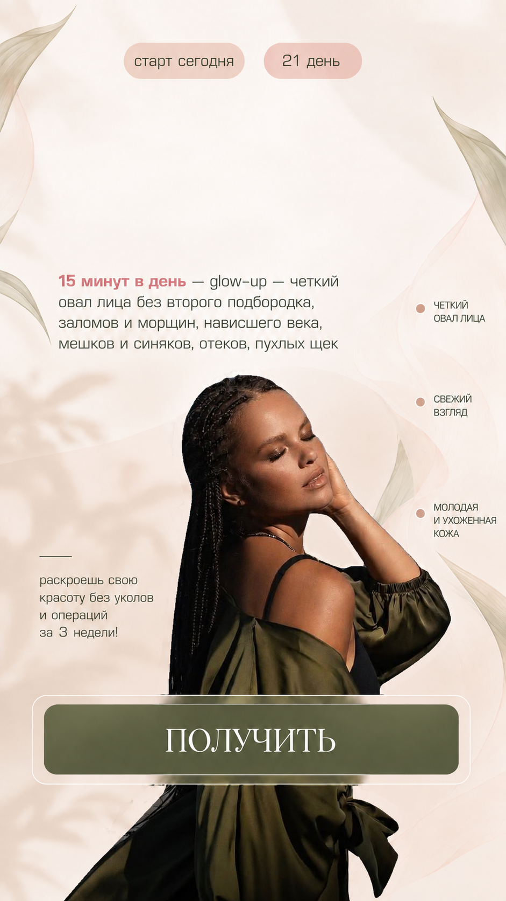
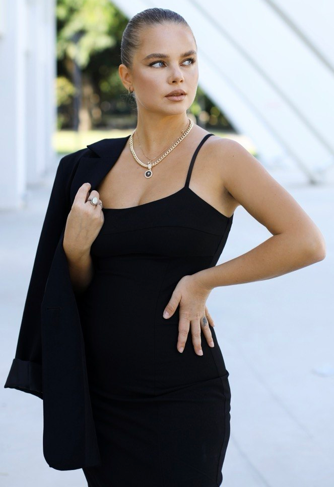

NAULİ
ENERJİ · İÇSEL GÜÇ · SAĞLIK

Старт сегодня. 21 день. 15 минут в день — glow-up — четкий овал лица без второго подбородка, заломов и морщин, нависшего века, мешков и синяков, отеков, пухлых щек.
Четкий овал лица. Свежий взгляд. Молодая и ухоженная кожа. Раскроешь свою красоту без уколов и операций за 3 недели!
Получить